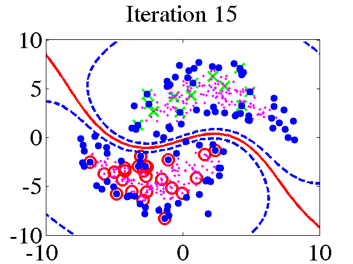
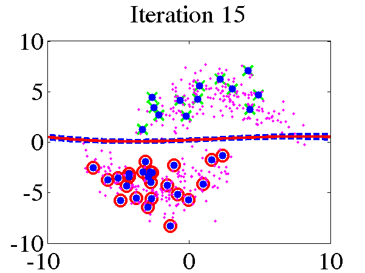

Null category noise model for semi-supervised learning.
Note that there is a C++ version of the NCNM available within the IVM C++ toolbox available here.
Current release is 0.11.
There are several other toolboxes you need to download and have in your path these are:
| Toolbox | Version |
|---|---|
| IVM | 0.33 |
| KERN | 0.141 |
| NOISE | 0.13 |
| NDLUTIL | 0.141 |
| OPTIMI | 0.13 |
| PRIOR | 0.13 |
| DATASETS | 0.1 |
Finally you will also need the NETLAB
toolbox in your path and
Anton Schwaighofer's SVM light MATLAB interface, available
here to run the
demThreeFive example which compares with SVMlight version 5.00.
The toy data example in the papers can be recreated using:
>> demUnlabelled1and leads to the decision boundary given below. A standard IVM based classifier can be run on the data using
>> dem\ The null category noise model run on toy data. Left: using the null category, the true nature of the decision boundary is recovered. Right: the standard Gaussian process, does not recover the true decision boundary. The other USPS digit classification example given in the NIPS paper can be re-run with:
>> demThreeFiveBe aware that this code can take some time to run. The results, in the form of averaged area under ROC curve against probability of missing label, can be plotted using
>> demThreeFiveResultsPlot of average area under ROC curve against probability of label being present. The red line is the standard IVM based classifier, the blue dotted line is the null category noise model based classifier, the green dash-dot line is the a normal SVM and the mauve dashed line is the transductive SVM.
Page last modified on Fri Jan 5 12:47:39 GMT 2007.